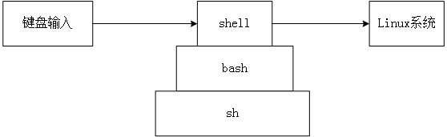

系列之Linux命令行大全笔记（一）
更新日期:
学习 Linux， 从命令开始
图形界面只是让简单事情，更简单
图形化界面能快速处理简单的事情，如打开/关闭文件
然后，随着事务复杂度的提升，图形化界面的操作也就繁琐起来
例如，word中插入一个图片：工具栏——插入——图片——浏览目录——确定
这个功能其实并不复杂，但整个过程中，点击至少4次
而命令行，专门用来处理复杂的事情
Linux 中的命令行
进入Linux命令行界面，展现在眼前的，其实是一个程序
它的名字是，shell
shell是一个接受由键盘输入的命令，并将其提交给Linux操作执行的程序
shell来自GNU项目的bash，bash是sh的增强版本

Linux 终端仿真器
Linux 发行版中，一般都带有终端仿真器（terminal emulator），用来访问shell
KDE环境使用 konsole， GNOME环境使用 gnome-terminal
shell 提示符
shell提示符的出现，意味着系统已经准备好接受输入
一般格式：
[用户名@机器名 当前工作目录 ] $
若 $ 变为 #，表示当前操作者用户超级管理员权限
命令行中的 上下左右
向上，切换到刚执行的命令
向下，切换到当前命令的下一条命令（若无，则不显示任何字符）
切换命令，需要系统已有命令历史（Linux一般可存储多达500条命令）
向左/向右，移动光标，可移动范围[命令起始位, 命令终结位]
简单命令
date ： 显示当天日期和时间
cal ： 显示当前月日历
ls ： 显示当前目录文件列表（表形式）
-a 显示所有文件（ls 默认不显示隐藏文件—以 . 开头的文件，一般会隐藏）
df ： 查看磁盘驱动器的当前可用空间
free ： 显示可用内存信息
clear ： 清空执行过的命令（显示在界面上的）
exit ： 退出终端仿真器